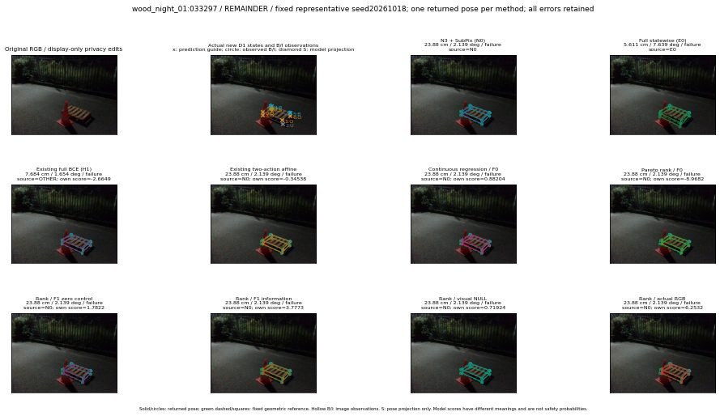

실선은 반환 자세, 초록 점선은 고정 기하 참조입니다. S는 영상 관측이 아닙니다. 점수는 모델별 의미가 다르며 보정된 안전 확률이 아닙니다. 개인정보 처리는 표시 사본에만 적용했습니다.
| 방법·seed | 위치 / 회전 / 공동성공 | 실제 출처 | 선택 후보 | 각 모델 자체 점수 |
|---|---|---|---|---|
| N0 | 23.88 cm / 2.139 deg / failure | N0 | N/A | N/A |
| E0 | 5.611 cm / 7.639 deg / failure | E0 | N/A | N/A |
| E0_REGENERATED | 5.611 cm / 7.639 deg / failure | E0 | E0_REGENERATED | N/A |
| POSEFIX_SUBPIX_PF_ANCHOR | 27.36 cm / 0.6701 deg / failure | OTHER | N/A | N/A |
| POSEFIX_SUBPIX_YOLO_ANCHOR | 27.36 cm / 0.6773 deg / failure | OTHER | N/A | N/A |
| D1_H1_MLP_s20261018 | 7.684 cm / 1.654 deg / failure | OTHER | WD0/ORIGINAL_WD/sample/4 | -2.664860248565674 |
| D1_H1_MLP_s20261019 | 4.907 cm / 5.103 deg / failure | OTHER | WD0/ORIGINAL_WD/sample/7 | -2.939486265182495 |
| D1_H1_MLP_s20261020 | 4.907 cm / 5.103 deg / failure | OTHER | WD0/ORIGINAL_WD/sample/7 | -2.751215934753418 |
| D1_H1_PAIR_MLP_s20261018 | 23.88 cm / 2.139 deg / failure | N0 | N0 | -1.198280930519104 |
| D1_H1_PAIR_MLP_s20261019 | 23.88 cm / 2.139 deg / failure | N0 | N0 | -1.3784903287887573 |
| D1_H1_PAIR_MLP_s20261020 | 23.88 cm / 2.139 deg / failure | N0 | N0 | -1.4356708526611328 |
| D1_H1_PAIR_ROLE_AFFINE_s20261018 | 23.88 cm / 2.139 deg / failure | N0 | N0 | -0.34537872672080994 |
| D1_H1_PAIR_ROLE_AFFINE_s20261019 | 23.88 cm / 2.139 deg / failure | N0 | N0 | -0.429625928401947 |
| D1_H1_PAIR_ROLE_AFFINE_s20261020 | 23.88 cm / 2.139 deg / failure | N0 | N0 | -0.35275644063949585 |
| R_CONT_F0_s20261018 | 23.88 cm / 2.139 deg / failure | N0 | N0 | 0.8820367455482483 |
| R_CONT_F0_s20261019 | 7.684 cm / 1.654 deg / failure | OTHER | WD0/ORIGINAL_WD/sample/4 | 1.0415098667144775 |
| R_CONT_F0_s20261020 | 23.88 cm / 2.139 deg / failure | N0 | N0 | 1.0351407527923584 |
| R_ORDER_F0_s20261018 | 23.88 cm / 2.139 deg / failure | N0 | N0 | -8.96820068359375 |
| R_ORDER_F0_s20261019 | 23.88 cm / 2.139 deg / failure | N0 | N0 | -5.519554138183594 |
| R_ORDER_F0_s20261020 | 23.88 cm / 2.139 deg / failure | N0 | N0 | -3.484344244003296 |
| R_ORDER_F1_ZERO_s20261018 | 23.88 cm / 2.139 deg / failure | N0 | N0 | 1.7822272777557373 |
| R_ORDER_F1_ZERO_s20261019 | 23.88 cm / 2.139 deg / failure | N0 | N0 | -5.503149032592773 |
| R_ORDER_F1_ZERO_s20261020 | 23.88 cm / 2.139 deg / failure | N0 | N0 | -0.7783693671226501 |
| R_ORDER_F1_s20261018 | 23.88 cm / 2.139 deg / failure | N0 | N0 | 3.7772622108459473 |
| R_ORDER_F1_s20261019 | 7.684 cm / 1.654 deg / failure | OTHER | WD0/ORIGINAL_WD/sample/4 | 2.288562774658203 |
| R_ORDER_F1_s20261020 | 23.88 cm / 2.139 deg / failure | N0 | N0 | 2.104391098022461 |
| V_ORDER_NULL_s20261018 | 23.88 cm / 2.139 deg / failure | N0 | N0 | 0.7192444205284119 |
| V_ORDER_NULL_s20261019 | 7.684 cm / 1.654 deg / failure | OTHER | WD0/ORIGINAL_WD/sample/4 | -0.7988536953926086 |
| V_ORDER_NULL_s20261020 | 23.88 cm / 2.139 deg / failure | N0 | N0 | -0.9494646191596985 |
| V_ORDER_RGB_s20261018 | 23.88 cm / 2.139 deg / failure | N0 | N0 | 6.253209590911865 |
| V_ORDER_RGB_s20261019 | 7.684 cm / 1.654 deg / failure | OTHER | WD0/ORIGINAL_WD/sample/4 | -1.0454225540161133 |
| V_ORDER_RGB_s20261020 | 23.88 cm / 2.139 deg / failure | N0 | N0 | -8.89349365234375 |